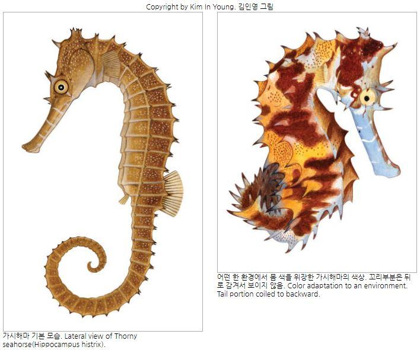

소개
가시해마는 세계자연보호연맹(IUCN)이 멸종 위기 종으로 지정한 종이다. 한약재와 관상용으로 남획되고 있으며, 새우잡이 어업에서 부수적으로 잡혀 죽는 개체도 많다.
가시해마의 서식지인 연안의 해조휴 환경이 줄어드는 것도 개체 감소의 원인 중 하나이다.야생 동식물의 국제 거래에 관한 협약(CITES) 에도 등재되어있다.
외관
가시해마는 최대 크기가 15~17cm인 작은 물고기이다. 머리는 말 머리 모양이며 몸을 가늘고 길고 몸에 가시가 많다. 몸은 단단한 골판으로 감싸여있고 꼬리까지 몸 전체에 체륜이 돌출해 있다. 몸통 부분의 체륜 수는 11개이며 꼬리 부분의 체륜 수는 33~34개이다.
체륜 위의 돌기들이 뾰족하고 길어서 다른 해마와 구분된다. 가시들은 날카롭고 끝이 검다. 몸통의 가시들은 길며 위로 4-5개의 머리 관 가시로 연속되어 있다. 이마와 뺨, 코, 눈 위에도 가시들이 많다.
주둥이는 매우 길고 입 쪽으로 가면서 가늘어진다. 꼬리는 물체를 쥐어 잡을 수 있다. 색상은 환경에따라 다양하게 변화한다.
한가지 색의 단색일수도 있고 체측이나 등은 다른색일 구도 있지만, 주둥이에는 한 개 이상의 백색 줄 무늬가 있을 때가 많다.
특징
인도, 한국의 남해, 일본 중부 이남에서부터 남으로 태평양과 인도양에 걸쳐 하와이, 아프리카까지 널리 분포한다. 왕관해마, 진질해마에 비교해도 개체수가 매우 적다. 우리나라에서도 관찰하기 매우 어렵다. 2004년 9월에 여수 주변 연안에서 해마 채집을 목적으로 총 30회 투망작업을 하면서 2개체가 관찰되었다.
